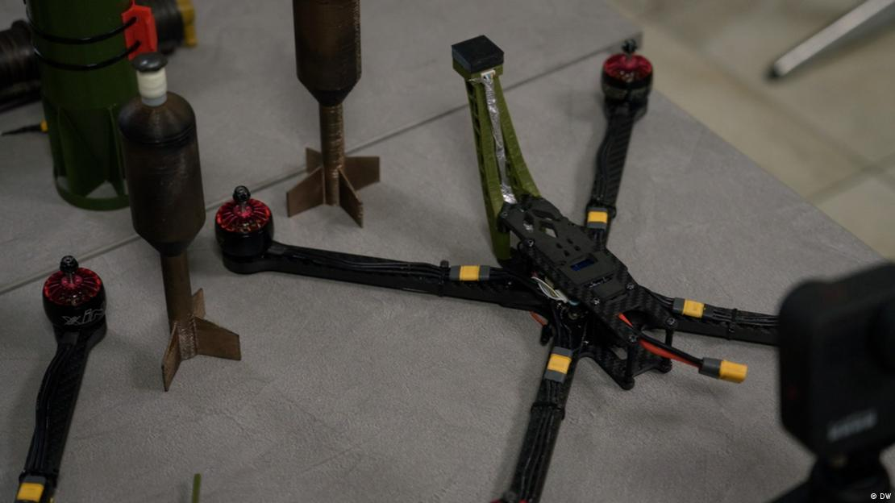

Uno de los desarrollos ucranianos del que se sabe poco es el dron kamikaze Beaver, fabricado por la empresa privada UkrJet. Supuestamente puede volar hasta 1.000 kilómetros, pero aún no se dispone de información oficial. Medios afirman que estos drones se han utilizado en numerosas ocasiones para atacar objetivos en Moscú. Los medios de comunicación rusos también han publicado imágenes de drones similares al UkrJet UJ-22 Airborne que, afirman, han llegado hasta la capital rusa. El dron kamikaze Rubaka es otro ejemplo de ataque de largo alcance desarrollado por Ucrania. Tampoco se sabe mucho de este modelo.
Estos drones se fabrican según el mismo principio de los drones iraníes Shahed que Rusia usa para atacar Ucrania. Los drones kamikaze guiados por GPS pueden ir armados con ojivas de hasta 50 kilogramos de explosivo. El director general del fabricante estatal de armamento Ukroboronprom, Herman Smetanin, afirma que su empresa también desarrolló un dron de este tipo, que ya se comenzó a fabricar en serie. Smetanin también insinuó la existencia de "modelos más potentes".
